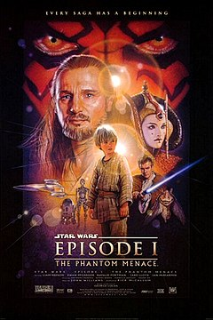

Star Wars: Episódio I – A Ameaça Fantasma é um filme épico de space opera estadunidense, pertencente a série de filmes Star Wars, lançado em 1999, dirigido e escrito por George Lucas. É o primeiro filme da trilogia prequela e o quarto da série rodado, embora o primeiro em ordem cronológica. Foi estrelado por Liam Neeson, Ewan McGregor, Natalie Portman, Jake Lloyd, Ian McDiarmid, Anthony Daniels, Kenny Baker, Pernilla August e Frank Oz.
Ameaça Fantasma ocorre cerca de 32 anos antes do filme original, e segue o Mestre Jedi Qui-Gon Jinn e seu padawan Obi-Wan Kenobi, como protetores da Rainha Amidala, na esperança de conseguir um fim pacífico para uma disputa comercial interplanetária de grande escala. Em sua jornada juntam-se a eles Anakin Skywalker — um jovem escravo com forte conexão com a Força — simultaneamente com o retorno dos misteriosos Sith.
Lucas começou a produção deste filme depois de considerar que os efeitos especiais tinham avançado suficiente para ele produzir uma nova trilogia da série. As filmagens começaram em 26 de junho de 1997, em locais como o Leavesden Film Studios e o deserto da Tunísia. Os efeitos visuais incluíram o uso extensivo do até então novo imagens geradas por computador (CGI). Ameaça Fantasma foi o primeiro trabalho de direção do Lucas após um hiato de 22 anos desde Star Wars em 1977.
A Ameaça Fantasma foi lançado nos cinemas em 19 de maio de 1999, dezesseis anos desde a última estreia de um filme da franquia, Return of the Jedi. A estreia do filme recebeu ampla cobertura da imprensa e alta antecipação, por causa do largo impacto cultural que a saga Star Wars tem cultivado. Recebeu críticas medianas dos especialistas, que tendiam a elogiar o visual, sequências de ação, trilha sonora de John Williams e performances de Liam Neeson, Ewan McGregor, Pernilla August, Ray Park e Ian McDiarmid, mas criticaram o roteiro e direção de elenco (particularmente de Ahmed Best e Jake Lloyd). Arrecadou 924,3 milhões de dólares ao redor do mundo em sua estreia, tornando-se na época a segunda maior bilheteria de todos os tempos, atrás apenas de Titanic. Foi a maior bilheteria de 1999, a maior bilheteria de um filme de Star Wars (até o lançamento de Star Wars: O Despertar da Força em 2015), e é atualmente a 41º maior bilheteria de todos os tempos. O relançamento em 3D em fevereiro de 2012, adicionou US$ 102,7 milhões em sua receita, chegando a US$ 1 bilhão mundialmente. O filme foi seguido pelas continuações, Star Wars: Episódio II – Ataque dos Clones em 2002 e Star Wars: Episódio III – A Vingança dos Sith em 2005.
